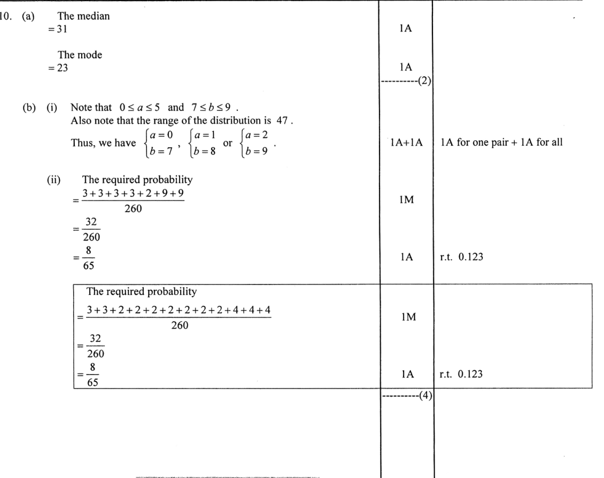

2013 DSE 數學 P1 Q10 答案＋詳解
題目（中文卷）
A 委員會的委員年歲如下：
| 17 | 18 | 21 | 21 | 22 | 22 | 23 | 23 | 23 | 31 |
|---|---|---|---|---|---|---|---|---|---|
| 31 | 34 | 35 | 36 | 47 | 47 | 58 | 68 | 69 | 69 |
(a) 寫出 A 委員會的委員年歲的中位數及眾數。 (2 分)
(b) 下面的幹葉圖顯示 B 委員會的委員年歲的分佈。已知這分佈的分佈域為 47。
| 幹（十位） | 葉（個位） |
|---|---|
| 2 | a 5 6 7 |
| 3 | 3 3 8 |
| 4 | 3 |
| 5 | 1 2 9 |
| 6 | 7 b |
(i) 求 a 及 b。 (4 分)
(ii) 現從每個委員會中，各隨機選出一名委員作該委員會的代表。當該兩名代表的年歲之差超過 40 時，他們便可參加某比賽。求這兩名代表可參加該比賽的概率。
English version（英文卷題目）
The ages of the members of Committee ( A ) are shown as follows:
| 17 | 18 | 21 | 21 | 22 | 22 | 23 | 23 | 23 | 31 |
|---|---|---|---|---|---|---|---|---|---|
| 31 | 34 | 35 | 36 | 47 | 47 | 58 | 68 | 69 | 69 |
(a) Write down the median and the mode of the ages of the members of Committee ( A ). (2 marks)
(b) The stem-and-leaf diagram below shows the distribution of the ages of the members of Committee ( B ). It is given that the range of this distribution is 47.
| Stem (tens) | Leaf (units) |
|---|---|
| 2 | ( a ) 5 6 7 |
| 3 | 3 3 8 |
| 4 | 3 |
| 5 | 1 2 9 |
| 6 | 7 ( b ) |
(i) Find ( a ) and ( b ). (2 marks)
(ii) From each committee, a member is randomly selected as the representative of that committee. The two representatives can join a competition when the difference of their ages exceeds 40. Find the probability that these two representatives can join the competition. (4 marks)
官方評卷參考（Marking Scheme）

考評報告
甚佳。大部分考生能寫出正確的中位數及眾數。平平。很多考生忽略了答案 a=0 及 b=7 。甚差。大部分考生未能得出正確的概率。